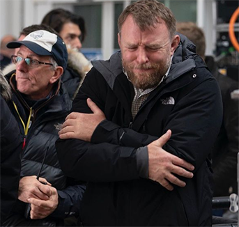

Ґай Стюарт Річі
- премія Едгара Алана По
- Golden Raspberry Award for Worst Pictured (2002)
- Golden Raspberry Award for Worst Directord (2002)
Хто такий Гай Річі?
Гай Річі – британський режисер, сценарист та продюсер.
Його заслужено називають одним із основоположників жанру чорних кримінальних комедій,
майстром блискучих діалогів і навіть королем кримінального світу Лондона.
Гай Річі — талановитий самоук, який жодного дня не провчився в кіношколі.
Спочатку він знімав музичні кліпи та рекламу,
потім назбирав на перший короткометражний фільм.
Він настільки вразив співака Стінга,
що той навіть погодився зіграти в першому повнометражному фільмі режисера-початківця.
Це були «Карти, гроші, два стволи».
Після нього все й закрутилось.
Режисерська кар'єра
Фільм мав приголомшливий успіх і незабаром закріпився на третьому місці
в списку найбільш комерційно успішних англійських кінокартин.
Наступна стрічка вийшла два роки потому.
Знятий в тому ж жанрі, що й попередній фільм, «Великий куш» (2000) також мав значний успіх.
У тому ж році Ґай одружився з популярною американською співачкою Мадонною,
яка за два роки після весілля виконала головну роль в його комедійній мелодрамі
«Понесені хвилею» (2002),
що зібрала в американському прокаті трохи більше ніж півмільйона доларів.
Згодом Ґай Річі зняв ще дві досить успішні повнометражні стрічки,
кримінальний трилер «Револьвер» (2005)
і кримінальний бойовик «Рок-н-рольник» (2008).
Останній фільм «Шерлок Холмс» у головних ролях, якого знялись Роберт Дауні (молодший)
і Джуд Лоу отримав багато позитивних відгуків і зібрав $520 млн. по всьому світу.
У 2011 році вийшло продовження фільму — Шерлок Холмс: Гра тіней.
Що особливого, в його творчості?
Всі фільми Гая Річі об'єднують деякі характерні риси, які роблять його роботи такими впізнаваними.
Оригінальна манера зйомки
Гай Річі досягає динамічного образотворчого ряду, використовуючи паралельний та кліповий монтаж. Це означає, що режисер може розповідати дві історії одночасно та використовувати різку зміну кадрів. Ще більше екшену картинам надають постійні флешбеки, флешфорварди та закадровий голос оповідача.
Нелінійний сюжет
Картини Гая Річі — це багатошарова мозаїка: продуманий до дрібниць сценарій,
кілька хитро переплетених один з одним історій,
велика кількість перехресних персонажів і несподівана розв'язка як вишенька на торті.
Ретельний підбір акторів
Персонажі у фільмах Річі завжди незвичайні, самобутні та самодостатні.
Режисер намагається в деталях передати характери та манеру поведінки навіть другорядних героїв,
чого вже говорити про головних.
Крім того, у кожного персонажа обов'язково знайдеться якась родзинка
- відмінна риса або фраза, за якою ви його запам'ятаєте.
Афористичність діалогів
Гай Річі вважає, що чим більш хльосткою буде фраза,
тим вища ймовірність, що вона піде в народ.
І це справді так — фільми режисера буквально роздерті на цитати.
Дуже чорний гумор
У фільмах він займає особливе місце: це не жарт заради жарту, а щось насправді комічне.
Непередбачувані вчинки, невимовна гра слів, якісь безглузді думки і дії персонажів
— все це Гай Річі подає вкрай несподіваному і тому смішному ключі.
Повне занурення у кримінальний світ
У фільмах Річі немає місця рожевим хмаркам та пухнастим котикам.
Зате є повний простір для бійок, стрілянин, віртуозних погонь та колоритних бандитів.
І це добре.
Продуманные визуальные и музыкальные решения
Ретельно підібрані саундтреки потім неможливо викинути з голови,
а титри заслуговують на те, щоб дивитися їх як окремі міні-фільми.
Закадровий голос
Йому приділяється особлива увага. Хоча багато режисерів і недолюблюють цей прийом,
Річі вважає,що так можна надати розповіді суб'єктивності
і створити довірчий місток між глядачем і персонажами.
Коли всі ці фактори зливаються докупи, виходить неповторний стиль Гая Річі.
Стрічки режисера
- Важкий випадок
- Карти, гроші та два стволи, що димлять
- Великий куш
- Прокат
- Костолом
- Понесені хвилею
- Листковий торт
- Револьвер
- Підозрюваний
- Рок-н-рольник
- Шерлок Холмс
- Шерлок Холмс: Гра тіней
- Агенти U.N.C.L.E.
- Король Артур: Легенда меча
- Аладдін
- Джентльмени
- Гнів людський
- Операція «Фортуна»: Мистецтво перемагати
- Перекладач